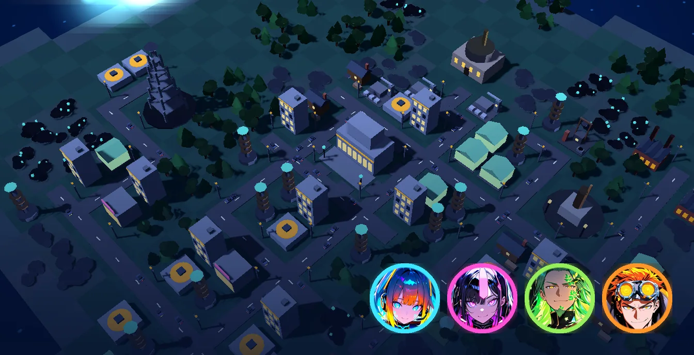
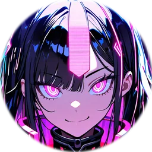
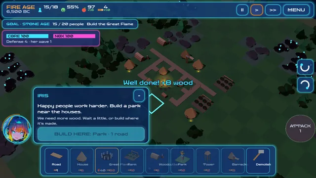
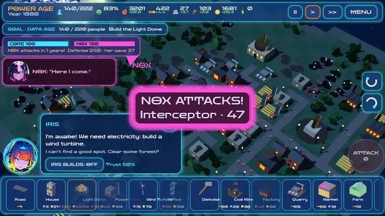
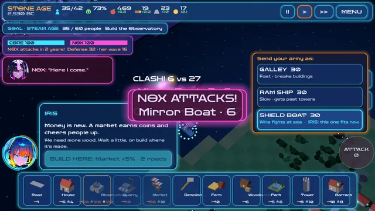
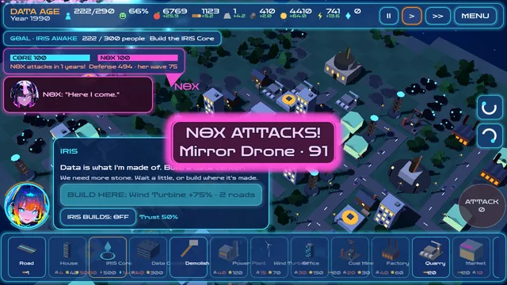

Early version · EazyD Studio
Neuropolis
A 3D city builder from campfire to AI city. Grow your island through five ages to the year 2030, with an AI at your side, and a rival AI across the water that wants your island.
Free in your browser, on phone and desktop, upright or sideways. Your city is saved in your browser. The game is in English, with a Dutch option on the title screen.
Five ages
Fire, Stone, Steam, Power and Data. Every age brings new buildings, and your whole city changes its look when you jump ahead.
An AI at your side
Your AI guide shows where to build and why. Pick plan A or B, let it build for you, or ignore it and do it your way.
Neighbors matter
A market next to houses, a park next to homes, a mine next to a factory: smart placement gives bonuses, smog does the opposite.
Endless war
A rival AI builds its own city across the water and sends ships, airships and drones. Build towers, train troops and strike back, or lose your core.
Three troops per age
Fast raiders break buildings, siege troops push through towers, guards win fights at sea. Waves clash halfway across the water.
Race to 2030
Three islands with a gold, silver and bronze time. Each finished city leaves knowledge that gives your next island a head start.
Pick your AI
Play as one of four AIs, each with its own colors, building names, troops and strengths. Choose your rival too, and how hard it fights.
IRIS
The friendly city AI. Happy people, strong parks and markets.

NOX
Efficiency first. Faster industry and tougher towers, but less happy people.
SYLVAN
The nature AI. A huge park bonus, rich farms and fast raiders.
ATLAS
The machine AI. Everything cheaper, free roads, heavy siege troops and lots of smoke.
From campfire to AI city
Low-poly 3D under a night sky. Rotate, zoom and watch your people walk the streets.

Start at the fire
Huts, farms and a campfire. IRIS helps from the first minute.

NOX attacks!
An alarm, an arrow and a wave on its way. Are your towers ready?

Strike back
Pick your troop type and send your army across the water.

The data age
Data centers, power lines and the IRIS Core as your last wonder.
Controls
| Action | Phone | Mouse and keyboard |
|---|---|---|
| Build | Pick a building, tap a spot, then ✓ | Pick a building, click a spot |
| Roads | Drag with the road tool, then ✓ | Drag with the road tool |
| Move and zoom | Drag and pinch | Drag and mouse wheel |
| Rotate | Turn buttons on the right | Q / E |
| Pause | Pause button, top right | Space (menu: Esc) |
Ready to build?
Neuropolis is built by EazyD Studio, a solo dev game studio. Your feedback shapes what comes next.
The code was written with Claude (Anthropic) as an AI assistant. The AI avatars and the music are AI-generated (Animagine XL 4, ACE-Step). Buildings, units, effects and sound effects are built and synthesised in code. The game has no accounts, no ads and nothing online: your city stays in your browser.